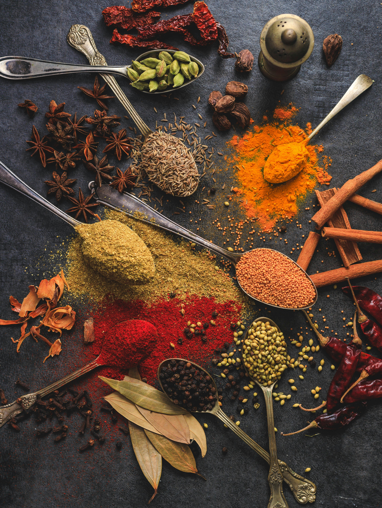
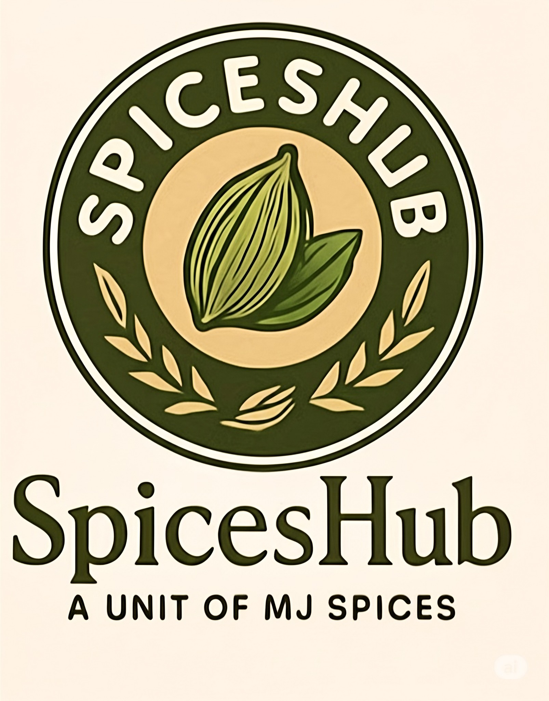

Rooted in Kerala, Reaching the World


SpicesHub – A Unit of MJ Spices
SpicesHub was born from a deep love for Kerala's extraordinary spice heritage. Founded in the verdant hills of God's Own Country, we set out with a singular mission: to connect the world with spices that are genuinely authentic, farm-fresh, and ethically grown.
We work hand-in-hand with small-holder farmers across Idukki, Wayanad, and Thiruvananthapuram — farmers who have cultivated these spice gardens for generations. By buying directly at fair prices, we uphold livelihoods while ensuring uncompromising freshness in every shipment.
Every batch passes our rigorous multi-stage quality control before export — from moisture testing and aroma grading to packaging integrity. SpicesHub guarantees that what arrives at your door is nothing less than extraordinary.
50+
Farm Partners
10+
Export Countries
100%
Natural & Pure
What We Stand For
Every decision at SpicesHub is guided by a commitment to quality, ethics, and the people who make our spices possible.
Authentic Indian Spices
We deal only in genuine, single-origin Kerala spices. No adulteration, no artificial enhancement — just pure, honest product straight from the farm.
Ethical Sourcing
We pay fair prices to our farmer partners and invest in their communities. Ethical trade is not a marketing badge for us — it's how we do business.
Strict Quality Control
Moisture testing, aroma grading, visual inspection, and packing integrity — every shipment is verified at multiple checkpoints before it leaves Kerala.
Freshness & Purity
Spices are packed immediately post-harvest to lock in volatile oils and aroma. No long warehousing, no stale stock — freshness is our promise.
The People Behind SpicesHub
Passionate about spices, committed to quality — meet the faces behind our brand.
Binoy
Founder & Director
A lifelong lover of Kerala's spice culture, Binoy has spent over a decade building trusted relationships with farmers and international buyers alike.

The MJ Spices Team
Kerala, India
Together, our team manages farm relationships, quality checks, packaging, and customer relationships — ensuring every order is perfect.
Ready to Source Premium Kerala Spices?
Whether you're a wholesale importer, retail buyer, or a spice enthusiast — we'd love to hear from you.